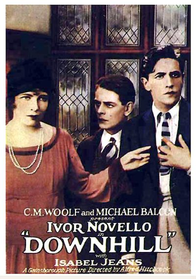

Downhill
Studio: Gainsborough Pictures
Starring: Ivor Novello, Robin Irvine, Isabel Jeans
Director: Alfred Hitchcock
Writer: Eliot Stannard, Ivor Novello, Constance Collier
Producer: Michael Balcon, C. M. Woolf
Downhill is a 1927 British silent drama film directed by Alfred Hitchcock, starring Ivor Novello, Robin Irvine and Isabel Jeans, and based on the play Down Hill by Novello and Constance Collier. The film was produced by Gainsborough Pictures at their Islington studios. Downhill was Hitchcock's fourth film as director, but the fifth to be released. Its American alternative title was When Boys Leave Home.
Trivia
- The film is based on the play Down Hill, which was written by its star Ivor Novello and Constance Collier under the combined alias David L'Estrange.
- The stage performance had a short run in the West End and longer in the provinces.
- In the play, Novello thrilled his female fans by washing his bare legs in a scene following a rugby match.
Previous Showings
1 Run • 0 Festivals
All runs on record (1):
- July 7, 1993w/ Easy Virtue